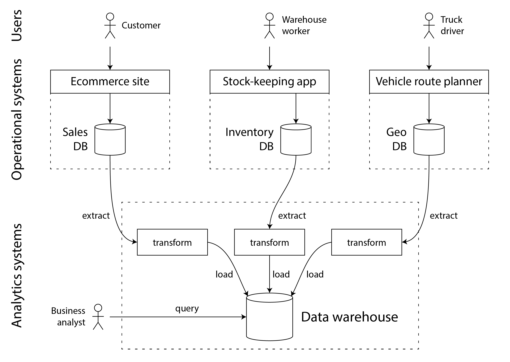
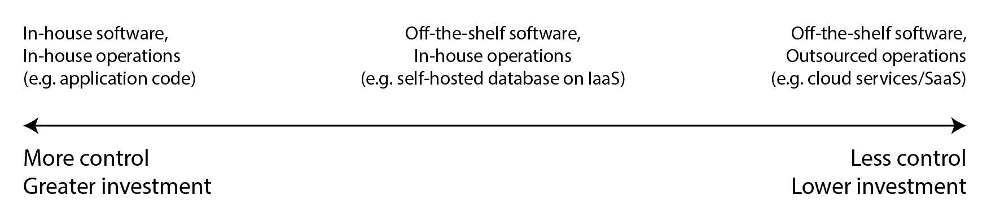

术语表 · 第 1 章 · 课程 1 / 14
数据系统架构中的权衡
「没有解决方案，只有权衡取舍。」这一章真正干的事，是把「权衡」从一句正确的废话，拆成四组可以当场作答的选择题，每组给出判据、代价，以及代价具体落在谁身上。
1.1先确认这是一道什么题
书里给了一个区分：如果数据管理是开发应用时的主要挑战，这个应用就叫数据密集型（data-intensive）应用；如果难点是把一项极庞大的计算并行化，那叫计算密集型（compute-intensive）。这两个词经常被混用，但它们的成本结构完全不同：计算密集型拼的是 FLOPS 和互连带宽，数据密集型拼的是存储布局、数据变更的传播、以及在故障与并发下的正确性。
数据密集型应用通常由几个标准构件拼起来：数据库（存下来以后还能找到）、缓存（记住昂贵操作的结果）、搜索索引（按关键字或条件过滤）、流处理（事件发生后立刻处理）、批处理（定期处理累积的大批量数据）。这个清单是能力清单，不是产品清单。一个 PostgreSQL 加上 pg_trgm 索引、一张物化视图和一个 LISTEN/NOTIFY 消费者，同时扮演了上面五个角色里的四个。反过来，Kafka 加 Flink 加 Redis 加 Elasticsearch 也能拼出同样五个能力，只是每项能力的边界清楚得多，运维面也大得多。
所以本章的第一个动作不是选型，而是把「我要什么能力」和「我用什么产品实现这个能力」分开。这一步做不到，后面所有权衡都会退化成对比博客文章。
1.2事务型与分析型：不是性能差异，是访问模式差异
很多人把 OLTP（联机事务处理，online transaction processing）和 OLAP（联机分析处理，online analytic processing）理解成「小查询」和「大查询」，这是表层。原文给的区分落在访问模式上，而访问模式又决定了存储布局。这一路推下去，才是第 4 章那套「行存 vs 列存」的由来。
事务型系统（operational system）由创建数据的后端服务构成，应用代码根据用户操作读写数据库。典型访问是点查询（point query）：按某个键取少量记录，再插入、更新或删除。查询集合由应用代码预先写死，用户不能自己提交 SQL，否则他可能读到无权访问的数据，也可能写出一个把库拖垮的查询。
分析型系统（analytical system）保存事务型系统的只读副本，服务业务分析师与数据科学家。典型访问是扫描海量记录算聚合：计数、求和、平均。查询是分析师临时写的，还可能由 Tableau、Looker、Power BI 这类工具自动生成。
| 属性 | 事务型（OLTP） | 分析型（OLAP） |
|---|---|---|
| 主要读取模式 | 点查询，按键读单条记录 | 聚合大量记录 |
| 主要写入模式 | 创建、更新、删除单条记录 | 批量导入（ETL）或事件流 |
| 人类用户 | Web / 移动应用的最终用户 | 为决策提供支持的内部分析师 |
| 查询类型 | 应用预先定义的一组固定查询 | 分析师可任意查询 |
| 数据表示的内容 | 数据的最新状态（当前时点） | 一段时间内发生的事件历史 |
| 数据集规模 | GB 至 TB | TB 至 PB |
最后两行是这份表里最容易在评审中救命的。第一，「最新状态」和「事件历史」是两种不同的数据，混在一个库里迟早出问题：你既要 UPDATE 一行的当前值，又要保留「它曾经是什么」以备审计，这两件事的写放大完全不一样。第二，GB 到 TB 和 TB 到 PB 之间隔着的不是一百倍存储，而是「能不能全量扫一遍」这个能力的有无。

为什么要把它们分开？原文列了四条理由，我把它们按「评审时最容易被追问」的顺序重排：
- 数据孤岛。所需数据散落在多个事务型系统里，很难用一条查询组合。这一条几乎无法靠「加个索引」解决。
- 模式不合适。适合 OLTP 的模式和数据布局不适合分析（详见第 3 章的星型模式）。
- 开销会外溢。分析查询开销极高，在 OLTP 库上跑会影响其他用户。这一条是本课反例的主角。
- 网络隔离。出于安全或合规，OLTP 系统可能位于不允许用户直接访问的独立网络中。
然后是本章我最希望你在评审里说出来的一句：
事务型系统与分析型系统的分离，体现了一种更广泛的趋势：随着工作负载要求越来越高，系统也日益专门化，针对特定负载进行优化。通用系统应付少量数据绰绰有余；但规模越大，系统往往越专门化。
这句话解释了一个常见困惑：「为什么 Postgres 什么都能干，我们还要买 Snowflake？」答案不是 Postgres 不行，而是专用化是规模的函数。十 GB 的时候通用系统赢在省事；十 TB 的时候通用系统输在它必须为两类互相冲突的访问模式同时做妥协。HTAP（混合事务/分析处理）想弥合这条缝，但原文说得很清楚：许多 HTAP 系统内部仍是一个 OLTP 系统加一个分析系统耦合而成，只是藏在统一接口后面。也就是说，那条缝在物理上还在，只是你看不见了——这对排障是净损失。
1.3记录系统与衍生数据：本课最有用的一条判据
如果这一章你只带走一个概念，带这个。原文的定义很短，但它能一刀切开大部分令人困惑的架构图。
从技术上讲，衍生数据是冗余（redundant）的，因为它复制了现有信息。但是，要让读查询获得良好性能，这种冗余往往不可或缺。你可以从同一个数据源衍生出多个不同的数据集，从不同「视角」观察数据。
大多数数据库、存储引擎和查询语言，本身并不天然是记录系统或衍生系统。数据库只是工具，如何使用由你决定。一个系统究竟属于哪一类，取决于它在应用中的用法，而不是采用了什么工具。明确哪些数据衍生自哪些其他数据，可以让原本令人困惑的系统架构变得清晰。
判据只有一句：这份数据丢了，能不能从别处重新算出来？能，它是衍生数据；不能，它是记录系统（也叫权威数据源，source of truth）。
这条判据之所以有用，是因为它一次性回答了四个平时要开三次会的问题：
要不要备份
记录系统必须能恢复到某个时间点，且恢复目标由业务定（RPO）。衍生数据可以不备份：重建比恢复更快、更可靠。给缓存做全量备份是纯浪费，而给唯一那份原始日志做「每日快照、保留 7 天」是事故。
故障时以谁为准
原文：如果其他系统与记录系统的数据不一致，那么按照定义，应以记录系统中的值为准。这句话省掉了「两边都改一下」这种灾难性操作。
能不能删了重建
衍生系统的一个隐藏好处：视图维护代码有 bug 时，删掉视图、修代码、重放事件即可。这条性质要求衍生过程是确定性的——第 3 章的事件溯源会专门讲这个坑。
一致性谁负责
记录系统一变，衍生数据就得跟着变。原文说得很直白：许多数据库假定应用只用它这一个库，因而很难集成多个系统并传播这类更新。这就是第 13 章「数据集成」要解决的问题，也是 CDC 存在的理由。
把一个典型架构翻译成这套语言：主库是记录系统；读写分离的从库、Redis 缓存、Elasticsearch 索引、数仓里的宽表、推荐模型的特征向量，全部是衍生数据。它们都可以丢，都可以重建，也都可能落后于主库。所以「缓存和数据库不一致」不是 bug，是设计上必然存在的窗口，你要决定的是这个窗口允许多大、以及在这个窗口里读到的旧值会不会让人做出错误决定。
1.4云服务与自托管：代价是「你没法看进去」
这一节的常见错误是把问题简化成「云贵还是便宜」。原文的判据很具体：如果你已经熟悉所需系统的部署和运维，而且负载相当容易预测，那么买自己的机器自行运行往往更便宜；如果你需要一个自己还不会运维的系统，或者负载随时间大幅波动，云服务更划算，因为闲置资源可以归还。

但对读这本书的人来说，云服务真正的代价不是钱，是可观测性的断点。原文列了五条缺点，其中第三条值得逐字读：如果某种使用方式触发了缺陷或性能问题，诊断会非常困难；自行运行的软件，你可以从操作系统拿性能指标和调试信息，还可以看服务器日志；服务由供应商托管时，你通常无法接触这些内部信息。
把这句话落到你熟悉的工具上：自建 Postgres 慢查询，你能上 perf、能看 /proc/diskstats、能 bpftrace 挂到 io_submit 上、能确认是页缓存命中率掉了还是 fsync 排队；托管服务慢查询，你只有它给你的那几个指标面板和一封工单回复。这不是「一样的东西不同价钱」，这是排障能力被削掉一层。
还有一个具体到系统调用层的例子，原文在讲「存储与计算分离」时提了一句：云提供商的虚拟磁盘（EBS、Azure 托管磁盘、Google 持久磁盘）并不是真磁盘，而是另一组机器模拟出来的块设备，每块通常 4 KiB；虚拟块设备上的每次 I/O 实际上都是一次网络调用。这句话对所有写过 O_DIRECT 或调过 fsync 的人都有直接后果：你精心设计的「一次 128 KiB 顺序写」在本地盘上是好几次 DMA，在虚拟块设备上是好几次网络往返，而且它会对网络抖动极度敏感。所以云原生系统通常避开虚拟磁盘，直接建在对象存储这类专用存储服务上——失去的是 POSIX 语义，换来的是把「单机磁盘」这个故障域整个删掉。
这也解释了抽象层的选择逻辑：层次越高的抽象，往往越面向特定用例。你的需求正好符合某个高层系统的设计场景，用它就省心；没有任何高层系统符合，就只能用低层组件自己搭。中间没有免费的第三条路。
1.5单节点还是分布式：默认答案应该是单节点
分布式系统的定义很朴素：多台机器通过网络通信。原文列了九条采用它的理由——固有的分布式、云服务之间的请求、容错/高可用、可伸缩性、延迟（把服务器放到用户附近）、弹性、使用专用硬件、法律合规、可持续性。这九条里，只有第一条是「不得不」，其余八条都是「为了换取某个具体好处，愿意付出分布式的代价」。
代价是什么？原文写得很直白：每一个经过网络的请求和 API 调用，都必须面对失败的可能；网络可能中断，服务可能过载或崩溃，任何请求都有可能超时而收不到响应。此时我们不知道服务究竟有没有收到请求，贸然重试未必安全。
这句话是整本书的技术债起点。它意味着：只要你的系统跨了网络，每一个写操作就必须回答「重复执行会怎样」，也就是幂等性。没有幂等性，重试就是在赌博。这条约束会一路长成第 8 章的事务、第 9 章的超时与无界延迟、第 12 章的 exactly-once。
云系统天然就是分布式系统，我们也简要考察了分布式系统与单机方案之间的一些权衡。有些场景无法避免分布式；但只要系统还能保留在一台机器上，就不宜急着将其分布式化。第 9 章将更详细地讨论分布式系统带来的挑战。
原文还给了两个反直觉的支撑：处理海量数据时，与其把数据传到另一台机器上处理，可能不如把计算带到已经保存数据的机器上去；节点更多也不一定更快——有些情况下，一台计算机上简单的单线程程序，性能可以显著胜过拥有 100 多个 CPU 核的集群（参考文献是那篇著名的 Scalability! But at What COST?）。再加上 DuckDB、SQLite 这类单节点数据库，如今许多工作负载确实能在一台机器上跑完：一块 NVMe SSD 顺序读几个 GB/s，128 核加 1 TB 内存的机器并不是买不到。
所以评审里该问的是三个更窄的问题：
- 瓶颈是单机放不下（容量），还是单机算不完（算力），还是不能停机（可用性）？三者的解法完全不同：容量→分片，算力→并行或换算法，可用性→复制。
- 如果只是为了可用性，我需要容忍的是「一块盘坏」「一台机器坏」「一个机架坏」还是「一个可用区坏」？容错能力永远是针对特定类型、特定数量的故障而言的，不写清楚故障模型，「高可用」就是形容词。
- 我能不能接受「网络分区时两边都可能接受写」？如果不能，代价是会有一段时间拒绝写；如果能，代价是要处理冲突合并。
1.6法律不是附录，是存储引擎的约束
这一节常被当成人文关怀跳过，但原文给了一个纯技术的例子：GDPR 赋予个人要求删除其数据的权利（被遗忘权）。然而许多数据系统的设计依赖仅追加日志这类不可变结构——一个本应不可变的文件，要怎样从中间删除某些数据？如果数据已经进入衍生数据集，比如成了机器学习模型的训练数据，又该怎么删？
这是第 4 章 LSM 树那个「墓碑要传遍所有压实层级」问题的合规版本：在 LSM 里，删除的记录可能在高层级里留很久，直到墓碑传遍所有层级；原文专门提到，有些存储引擎的设计目标就是更快地传播删除。第 3 章的事件溯源也有同一个洞：事件日志不可变，但事件里可能带个人数据。
所以「数据最小化」（data minimization）听起来像管理口号，实际上是一个架构决策：不存，就不需要删；不需要删，就不需要为删除实现一套跨所有衍生系统的传播机制。原文甚至直接说，把所有风险考虑在内之后，合理的结论可能是某些数据根本不值得存储。这句话在评审里的用法是：当有人说「先存着，将来也许有用」，你可以要求他写清楚「将来什么用、存多久、怎么删」。
1.7反例：一次报表把主库打死
这是我在真实系统里见过、也在别人的事故复盘里反复见到的形状。它不是玩具，因为它的每一步都很合理。
反例：分析查询直接打在生产主库上
一个 Postgres 主库，业务写入 QPS 800，p99 20 ms。为了「简单」，运营报表、财务对账、增长分析全部直连主库。表 orders 有 1.2 亿行、40 多个列，主键索引之外还有 6 个二级索引。
月初财务跑一条对账：按 created_at 范围扫三个月，GROUP BY 商户、渠道，ORDER BY 金额。这条查询不建新索引也能跑，只是要读几千万行。
① 它把两类访问模式塞进一个 buffer pool。全表扫会把自己读过的页塞满共享缓冲区，业务点查的热页被挤出去，命中率断崖式下跌，p99 从 20 ms 涨到 800 ms，业务代码一行没改。
② 它占的是同一批连接和同一个 I/O 队列。长查询持有快照，挡住 vacuum，表膨胀；同时把 WAL 生成速率推高，从库复制延迟跟着涨。
③ 它污染的是记录系统。报表是衍生数据，却直接在记录系统上算，这违反了 1.3 的分层，代价是「一个只读需求能拖垮写路径」。
④ 最坏的失败模式是无人察觉。报表跑完就恢复了，于是没人立项目；它每个月来一次，每次都恰好是财务最忙的那两天。
改法（按代价从低到高）：先在只读副本上跑报表——这解决了 buffer pool 和连接争用，但没解决「扫几千万行」的成本；再给报表建覆盖索引（created_at, merchant_id, channel 加金额），把随机读变成索引区间扫描；然后上物化视图或按天预聚合的汇总表，让常见维度组合变成查几十行；最后才是把分析搬去列存（第 4 章）。每一步都要重新检查一件事：这份新数据是记录系统还是衍生数据？如果是衍生数据，就必须回答「它落后主库多久可以接受」。
这个反例真正的教训不是「别在主库跑报表」——那是结论。教训是：当一个需求只在读路径上，它的故障却能出现在写路径上时，说明你把两个不同的系统边界画在了一起。
练习判断这四个场景里，谁是记录系统
四段描述。判断每一段的核心问题属于哪一类，注意有时答案是「其实没问题」。
团队给首页时间线做了一个 Redis 缓存，缓存丢了就回源查数据库重建。有人提议给这个 Redis 做每日全量备份。
缓存是衍生数据，丢掉能从记录系统重建。给它做全量备份是把「可重建」这个最重要的性质浪费掉了——更该做的是压测「冷缓存时回源会不会打穿数据库」，这才是它真正的故障模式。
一个系统的事件日志只追加、不可变，所有读模型都由它派生。某天发现某个读模型的维护代码有 bug，算错了余额。
这正是事件溯源的核心价值：读模型可以删掉、用修正后的代码按同样顺序重放。前提是派生过程必须确定性——如果处理事件时去查了外部汇率，重放结果就会不一样（第 3 章）。
三人团队，日活两万，QPS 峰值 300，数据量 40 GB。技术栈是 Kubernetes + 四个微服务 + Kafka + 独立的搜索集群。
单机 Postgres 加一个进程内任务队列就能扛住这个量级，而且排障时只有一份日志、一个 perf 能挂。四个服务意味着四个独立的故障域、四条需要显式传播的数据变更路径，以及每次改接口都要协调。规模不到的时候，复杂度是纯负债。
一个团队把对象存储里的 Parquet 文件当作唯一一份原始数据，没有任何上游数据库；所有报表、模型、导出都从它算。
判据是「丢了能不能从别处算出来」，不是「它是不是文件」也不是「它是不是列存」。没有上游，它就是权威数据源，必须按记录系统的标准做版本、备份和删除传播——哪怕它长得像数据湖。
练习单选：哪一个是衍生数据
单选下面四个东西，哪一个按定义是衍生数据？
练习把你的架构图改写成三层
拿一张你手上的系统架构图（或者你正在评审的那份设计文档）。请只做一件事：把图里每个存储组件标成「记录系统」或「衍生数据」，然后在每个衍生数据旁边写上它从谁派生、落后多久、怎么重建。
提示：如果一个组件你标不出来，那通常意味着没人说得清它是不是权威源——这本身就是评审要拦下的问题。
一个合格的答案长这样（以「用户表按 uid 分片 + 关注关系图数据库 + 时间线缓存预热」这种典型描述为例）：
- 用户库（按 uid 分片）：记录系统。上游无。重建：只能从备份恢复，所以要答 RPO/RTO。
- 图数据库里的关注关系：取决于它是不是唯一一份。如果写入先落用户库再同步过去，它是衍生数据；如果关注关系只写图库，它是记录系统——这时它必须有自己的持久化和恢复方案，而且它和用户库之间没有跨库事务。
- 时间线缓存：衍生数据。上游是发帖事件。允许滞后：几秒（这是产品决策，不是技术默认）。重建：全量回源会很贵，所以要有预热和限流。
写完通常会暴露两件事：第一，有一到两个组件谁都说不清归属，而它们往往就是事故现场；第二，某些被当成衍生数据的东西其实是唯一副本——它一直没有备份，只是还没出事。
一个诚实的补充：标注这件事本身不产生价值，价值在于它逼出「滞后多久可以接受」这个数字。没有这个数字，「最终一致」就只是一句免责声明。
→面试里怎么答
被问到「你怎么设计这个系统的存储」时，不要从产品名开始，从这四句开始：
「先分负载：这是点查为主的 OLTP，还是扫大量行算聚合的 OLAP？这两者的存储布局是两套东西，我不会用一个库同时扛，除非数据量还在 GB 级、而且我能接受分析查询影响写路径。
事务侧我会指定一个记录系统，其余全部是衍生数据：缓存、搜索索引、报表宽表都能丢、都能重建，所以它们允许滞后，但不允许被当成权威源。
现在写入大约是每秒 X 次、数据量 Y GB，一块 NVMe 加单机 Postgres 就够，所以我先不分布式化。分布式的代价不是机器钱，是每个跨网络调用都要处理超时，而超时之后我不知道对方做没做，所以每个写操作都得幂等。
翻盘点我会盯着三个：单机写带宽打满、需要容忍整个可用区故障、或者合规要求数据必须落在特定地域。到那时引入复制解决可用性、引入分片解决容量，两者要分开评估。」
这四句之所以能扛追问，是因为每一句都自带条件：「除非」「大约」「先不」「到那时」。面试官问「如果量再大十倍」，你已经有翻盘点了；问「为什么不用 Kafka」，你可以答「因为现在我只有一条消费路径，加 Kafka 是加一个故障域而不减一个」。
→带走什么
这一章给的不是知识，是一个可以在会议里当场执行的动作：把「我们用什么」换成「我们在换什么」。每当你听到「我们用 X」，追问一句「用它换掉了什么，代价落在谁身上」。OLTP 和 OLAP 分家，换掉的是分析查询对写路径的干扰，代价是多一套 ETL 和数据滞后；云托管换掉的是运维人力，代价是排障时你看不进去；分布式换掉的是单机容量上限，代价是每个调用都可能失败且结果未知。
贴进架构评审文档的话：「本设计指定 orders 库为记录系统，缓存、搜索索引、报表宽表均为衍生数据（可重建，允许滞后 ≤ 5 s）。分析负载走只读副本与列存，不直连主库；当前单机可承载，暂不引入分片与跨服务事务，翻盘条件为写入带宽打满或需容忍可用区级故障。」
一手资源
第 1 章 数据系统架构中的权衡（中文全译）：重点读「记录系统与衍生数据」和「分布式与单节点系统」两节。前者给你判据，后者给你拒绝分布式化的弹药。
随时问我
把你手上那份架构图的组件列表贴给我，我们一起标一遍记录系统和衍生数据。我尤其想看那些「说不清是谁派生的」组件，它们通常是下一次事故的候选。